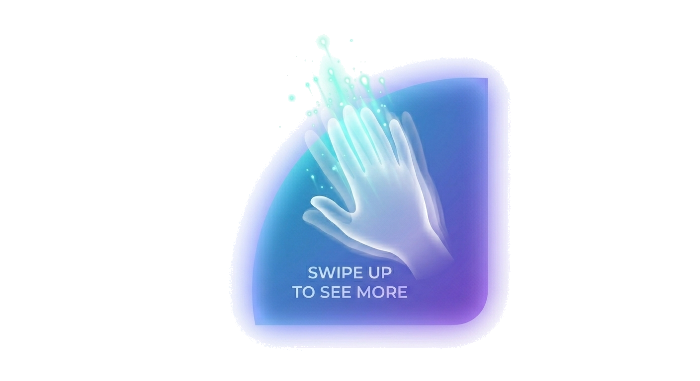

Journey from BLR to Leh
Leh Aryan Village
Aryan Village to Hambuting La Pass
Kargil War Memorial, Apricot Blossom and Maitreya Budhha in KarcheyKhar
The beauty of Suru Valley, Parkachik Glaciers
The Giant Budhha at Mulbek and Moonland Valley
Leh Palace, Rancho School, Shey Palace, Sindhu Ghat
Khardung La Pass, ATV ride, Double hump-bactrian Camel
Scenic Nubra Valley
Suru River to Turtuk Village in Nubra Valley
Snippets from Nubra Valley, Dikshet Monastery
Reach Pangong Lake [3-idiots Lake]
Revisit Pangong Lake and Changla Pass
Thank you for watching